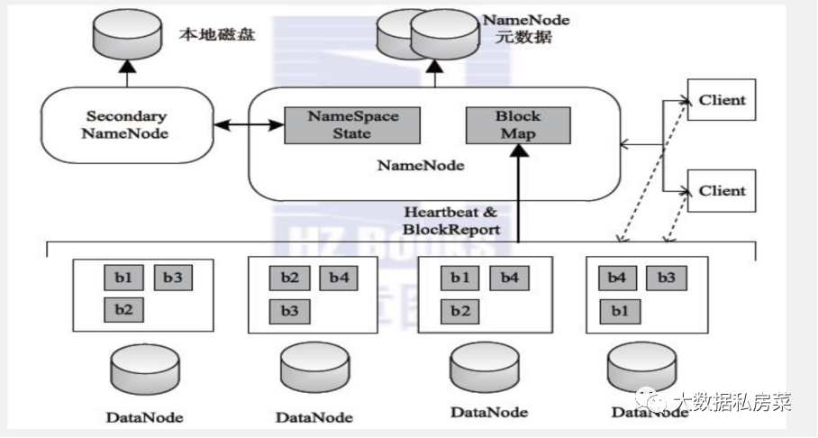
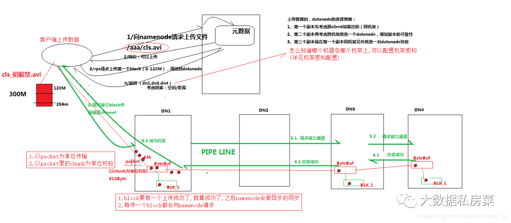
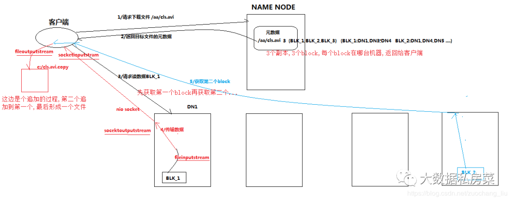
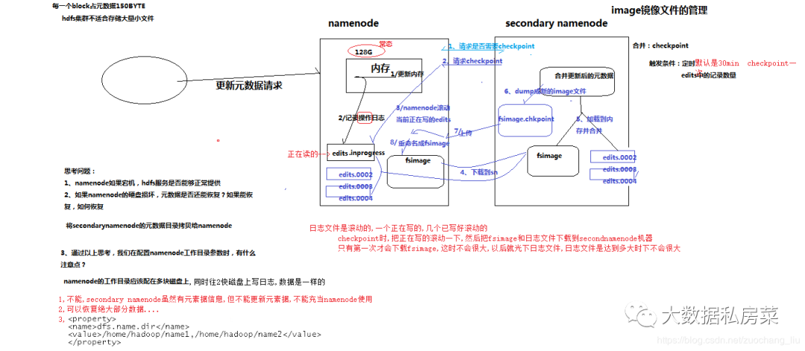

大数据-001hadoop之hdfs基础知识
HDFS系统架构

HDFS数据安全性如何保证
- 存储在HDFS系统上的文件，会分割成128M大小的block存储在不同的节点上，block的副本数默认3份，也可配置成更多份；
- 第一个副本一般放置在与client（客户端）所在的同一节点上（若客户端无datanode，则随机放），第二个副本放置到与第一个副本同一机架的不同节点，第三个副本放到不同机架的datanode节点，当取用时遵循就近原则；
- datanode已block为单位，每3s报告心跳状态，做10min内不报告心跳状态则namenode认为block已死掉，namonode会把其上面的数据备份到其他一个datanode节点上，保证数据的副本数量；
- datanode会默认每小时把自己节点上的所有块状态信息报告给namenode；
- 采用safemode模式：datanode会周期性的报告block信息。Namenode会计算block的损坏率，当阀值<0.999f时系统会进入安全模式，HDFS只读不写。HDFS元数据采用secondaryname备份或者HA备份
hdfs的体系结构
hdfs有namenode、secondraynamenode、datanode组成。为n+1模式
- NameNode负责管理和记录整个文件系统的元数据
- DataNode 负责管理用户的文件数据块，文件会按照固定的大小（blocksize）切成若干块后分布式存储在若干台datanode上，每一个文件块可以有多个副本，并存放在不同的datanode上，Datanode会定期向Namenode汇报自身所保存的文件block信息，而namenode则会负责保持文件的副本数量
- HDFS的内部工作机制对客户端保持透明，客户端请求访问HDFS都是通过向namenode申请来进行
- secondraynamenode负责合并日志
namenode对元数据的管理
namenode对数据的管理采用了三种存储形式：
- 内存元数据(NameSystem)
- 磁盘元数据镜像文件(fsimage镜像)
- 数据操作日志文件（可通过日志运算出元数据）(edit日志文件)
hdfs的namenode宕机怎么解决
先分析宕机后的损失，宕机后直接导致client无法访问，内存中的元数据丢失， 但是硬盘中的元数据应该还存在，如果只是节点挂了，重启即可， 如果是机器挂了，重启机器后看节点是否能重启，不能重启就要找到原因修复了。 但是最终的解决方案应该是在设计集群的初期就考虑到这个问题，做namenode的HA。
hdfs中一个datanode宕机,恢复流程是什么样的
Datanode宕机了后，如果是短暂的宕机，可以实现写好脚本监控，将它启动起来。
如果是长时间宕机了，那么datanode上的数据应该已经被备份到其他机器了，那这台datanode就是一台新的datanode了，删除他的所有数据文件和状态文件，重新启动。
client写数据时有机器宕机怎么处理
在通过客户端向hdfs中写数据的时候，如果某一台机器宕机了，会怎么处理？
- 在写入的时候不会重新重新分配datanode。
- 如果写入时，一个datanode挂掉，会将已经写入的数据放置到queue的顶部，并将挂掉的datanode移出pipline，将数据写入到剩余的datanode，在写入结束后， namenode会收集datanode的信息，发现此文件的replication没有达到配置的要求（default=3）,然后寻找一个datanode保存副本
hdfs写流程

- 客户端跟namenode通信请求上传文件，namenode检查目标文件是否已存在，父目录是否存在
- namenode返回是否可以上传
- client请求第一个block该传输到哪些datanode服务器上
- namenode返回3个datanode服务器ABC
- client请求3台dn中的一台A上传数据（本质上是一个RPC调用，建立pipeline），A收到请求会继续调用B， 然后B调用C，将真个pipeline建立完成，逐级返回客户端
- client开始往A上传第一个block（先从磁盘读取数据放到一个本地内存缓存），以packet为单位，A收到 一个packet就会传给B，B传给C；A每传一个packet会放入一个应答队列等待应答
- 当一个block传输完成之后，client再次请求namenode上传第二个block的服务器。
hdfs读流程

- client跟namenode通信查询元数据，找到文件块所在的datanode服务器
- 挑选一台datanode（就近原则，然后随机）服务器，请求建立socket流
- datanode开始发送数据（从磁盘里面读取数据放入流，以packet为单位来做校验）
- 客户端以packet为单位接收，现在本地缓存，然后写入目标文件
元数据的checkpoint
每隔一段时间，会由secondary namenode将namenode上积累的所有edits和一个最新的fsimage下载到本地，并加载到内存进行merge（这个过程称为checkpoint）

namenode和secondary namenode的工作目录存储结构完全相同，所以，当namenode故障退出需要重新恢复时，可以从secondary namenode的工作目录中将fsimage拷贝到namenode的工作目录，以恢复namenode的元数据
fsimage和edit的区别
1. fsimage：filesystem image 的简写，文件镜像。
2. 客户端修改文件时候，先更新内存中的metadata信息,只有当对文件操作成功的时候，才会写到editlog。
3. fsimage是文件meta信息的持久化的检查点。
secondary namenode会定期的将fsimage和editlog合并dump成新的fsimage
hadoop中hdfs常用的命令
hdfs dfs get
hdfs dfs put
hdfs dfs stat